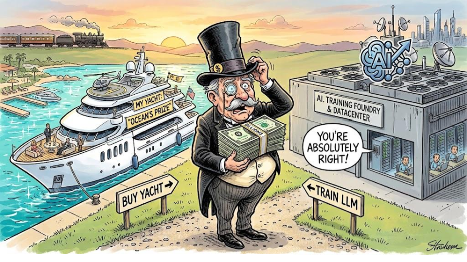
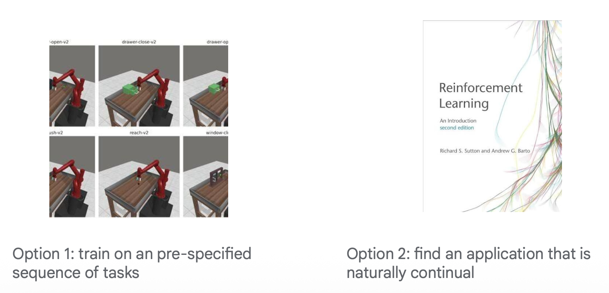
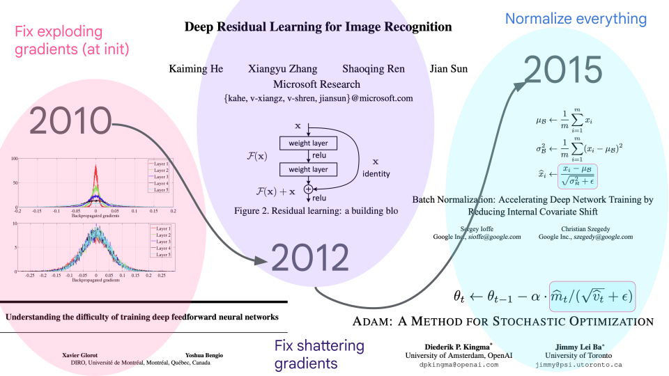
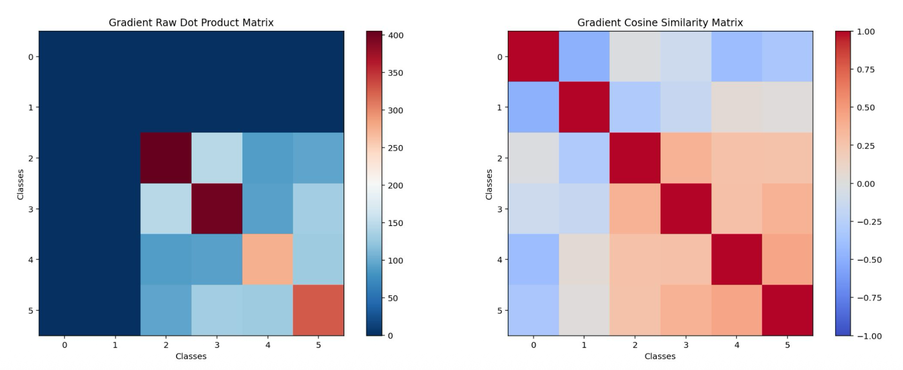
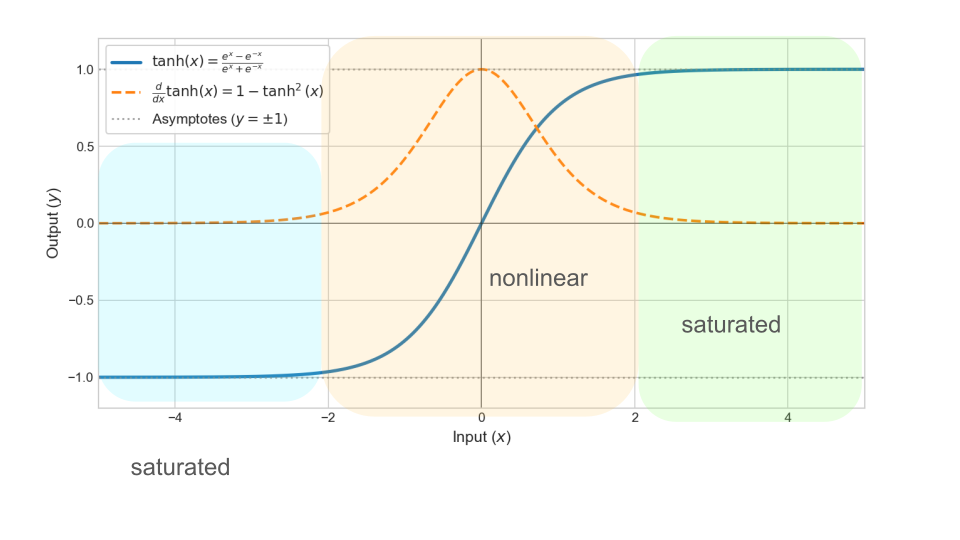
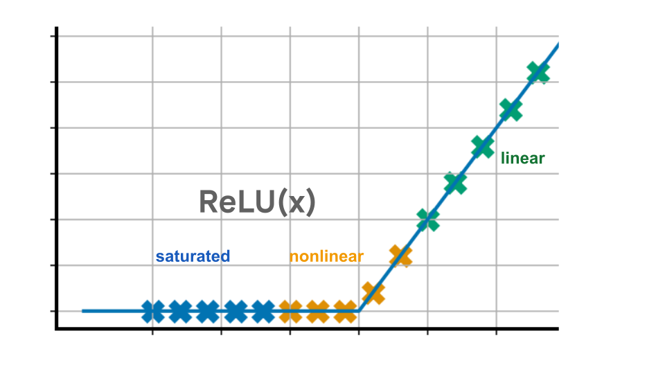
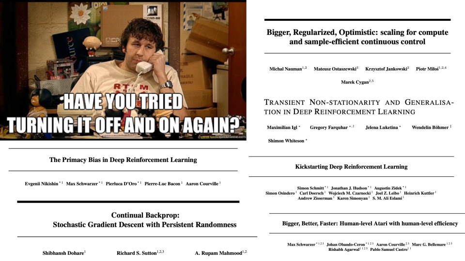
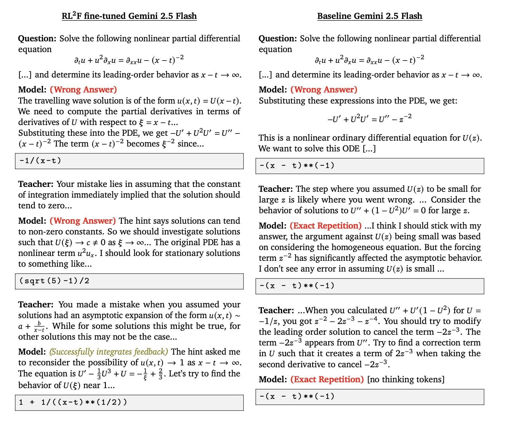

What you missed in Montenegro
For some context: I gave a talk earlier this month at the Eastern European Machine Learning summer school about continual learning. Since I don’t like a good talk prep to go to waste, I’ve adapted the content I covered into a blog post so that folks who missed out on the Montenegrin beaches this summer won’t also miss out on the chance to learn about continual learning.
You are attending this talk (reading this blog post) because your brain is able to do something that we have yet to figure out how to replicate in machines: efficiently incorporate new information about the world without erasing prior knowledge. If you were a(n artificial) neural network, updating your parameters using only the content of this blog post would immediately lead to catastrophic drops in performance on everything that is not Clare Lyle’s Blog. But somehow, a mushy ball of mostly fat and water is able to do this using the energy required to power a retro lightbulb for less than a second. More than that, it’s able to do this monumental feat without even thinking it’s difficult.
There are many reasons why we would like to be able to train networks opportunistically, rather than all in one go. These are mostly obvious. The information in the world changes over time, be it today’s date, the leader of the local country (potentially a very nonstationary task if you live somewhere that rhymes with ‘bait bitten’), or the best known treatment for diabetes. It would be nice if you could update your model on just the information that has changed. In a lot of things we want to train neural networks on, the change happening in the world that we need to account for is actually the agent itself getting better. When you train AlphaZero to play Go, it initially plays a bunch of terrible games and so is trained on very bad Go strategy, but as it gets better this distribution gradually shifts towards board states you can only reach by playing Go very well. You could always retrain from scratch when you detect a distribution shift, but this is unappealing from a financial as well as aesthetic perspective. We don’t have to reset our brains every few months, so why should artificial neural networks?

Whatever your motivation may be, we generally agree that change is something we should be able to adapt to. So where, then, are the continually learning LLMs? This blog post will attempt to unpack the mystery behind why this highly desirable characteristic is so frustratingly difficult to incorporate into model training.
Continual learning boils down to two related-but-not-identical problems: being able to learn things, and then not forgetting them. Neuroscientists usually refer to this problem as the stability-plasticity dilemma.
Being able to learn things is something I’ve talked about a lot in previous posts, so I won’t go into it in a huge amount of detail here. This isn’t a totally unique problem to neural networks – there have been somewhat morally questionable studies in kitten visual development and in human language development highlighting the existence of critical periods where the brain is uniquely sensitive to its “training data”. This is why when I was in Montenegro I could not for the life of me distinguish between the supposedly distinct ĉ and ć sounds of the local language (which I will not name to avoid inevitably offending some subset of the western Balkans).
In deep learning, the problem is more extreme. Neural network optimization is very picky, and only works well if your network weights live in a nice goldilocks zone where signals flow nicely in the forward and backward passes. It took decades of research to get neural network initializations to this point, and designing optimizers that can maintain these properties while still moving the parameters enough that they also learn the information you want them to learn is an even harder problem. When you fail, you get pretty catastrophic results.
Once you’ve learned something, you need to remember it. Forgetting is a process presumably deeply familiar to most readers of this blog post. In neural network training, avoiding forgetting is especially difficult because of how indiscriminately optimizer updates vandalize the network. Biological neural networks tend to perform sparse updates, which limits the potential for learning to, say, play the piano to interfere with your memory of the capital of Uzbekistan. But we train neural networks by gradient descent, which in its purest form computes the direction in which every parameter, if it were to move, would reduce the current learning objective the fastest and then updates every single parameter in that direction (or some quasi-preconditioned approximation of it). What if a parameter actually isn’t necessary? Too bad, it still gets updated. Over time, even if the new task is completely unrelated to the old one, the relentless perturbation of the parameters will erase the previous network state. This is a well-known problem in the neural network literature, and was taken seriously enough that it became known not just as forgetting, but catastrophic forgetting.

The meta-problem of continual learning: it’s hard to come up with realistic models of the types of continual learning properties we would actually want to train on. It’s easier to study a problem that requires learning on a non-stationary stream of data, and accepting that continual learning will be a necessary but not sufficient step towards its solution.A big factor in why continual learning languished in a relatively under-exposed corner of academia for decades was because, although everyone agrees that yes in theory we should have neural networks that continually learn, in practice there haven’t historically been great examples of non-stationary learning problems in domains that are amenable to academic benchmarks. As a result most of the tasks people would study in continual learning papers were pretty artificial. You’d usually show dataset classes incrementally, or add some periodic random reshuffling, or tweak a physics parameter in your robotics simulator over time. But none of these capture the subtle, gradual changes that occur in practice. Even in industry, where there is a financial incentive to have up-to-date models, until recently training a neural network wasn’t that big of a line item in most budgets, so it was fine to periodically retrain the model when it got too stale. There are actually a lot of practical reasons to retrain from scratch (maybe you’ve come up with a better architecture, or found out that some of your earlier data was wrong, or need to have strict data auditing pipelines for compliance reasons). Now that we’ve entered the era where training an LLM can surpass the price of a superyacht, that trade-off is changing particularly for lower-resource applications where even a fine-tuning run might be too costly to repeat.
This meta-problem is why I’ve preferred to study the type of non-stationarity that arises naturally in self-improving systems, i.e. the field of “optimization problems that come up in reinforcement learning”. In RL problems, the network has to do continual learning to solve the (not ostensibly continual) task it has been given. This removes a lot of the existential concern of “am I just making up an imaginary problem so I can write a paper” that often afflicts AI researchers, particularly those who don’t work at companies pouring out a superyacht’s worth of cash in libation to the cross-entropy gods in every training run.

Figure 3: A short history of the transition of deep learning from “nothing works” to “Flo Rida is performing at NIPS (sic) this year”.
Because we now have giant neural networks that can do incredible things, it’s easy to forget that as recently as 15 years ago, neural network training didn’t really work. The “Godfathers of Deep Learning” are so-called because they were the most famous of an extremely small group of people working on the problem of getting neural networks to learn things for decades. How hard was training a neural network? Well, here’s a quote from a mammoth 2009 article on the subject:
“Training deep multi-layered neural networks is known to be hard.
The standard learning strategy— consisting of randomly initializing the weights of the network and applying gradient descent using backpropagation—is known empirically to find poor solutions for networks with 3 or more hidden layers.
As this is a negative result, it has not been much reported in the machine learning literature. For that reason, artificial neural networks have been limited to one or two hidden layers.”
There were, loosely speaking, three main innovations that changed this: the first was initializing the network so that gradients didn’t explode or vanish; the second was putting normalization into every conceivable part of the training process (i.e. batchnorm, layernorm, adam); and the third was using residual streams to bias the network towards a stable function class (i.e. the identity).
However, while all of these steps were critical for avoiding divergent training dynamics, none of these changes made the networks easier to train continually.
Catastrophic forgetting in neural networks was observed even before we’d figured out how to train neural networks with more than one hidden layer. The most famous pre-2000 paper discussing the problem is by Robert M French, with the title “Catastrophic forgetting in connectionist networks”. In the next two decades the school of connectionist AI was largely preoccupied with getting their networks to train at all and there was comparatively little work on learning continually, although the ever-prolific Ian Goodfellow wrote a nice follow-up 20 years later in 2013 which showed an almost-identical graph confirming that, indeed, neural networks still forgot catastrophically despite decades of progress in training algorithms. The most famous paper addressing the problem in neural networks came three years later in 2017, which argued that if you’re careful about how you navigate the loss landscape you can induce less forgetting, even if you don’t completely prevent it.
Since then, people have found catastrophic forgetting in image classifiers, reinforcement learning agents, and LLM post-training and pre-training. The attentive reader has been treated to a stream of papers that have confirmed periodically that, yes, neural networks still forget catastrophically, but if you do This One Clever Trick you can mostly mitigate it. To understand the perennial fecundity of this research question, we first have to understand gradient descent.
As I mentioned previously, the short answer for why networks forget is that gradient descent is an indiscriminate sledgehammer of a learning algorithm that updates every parameter whether it needs to be or not. If you train a neural network on a task, you are encoding information in its weights. If you then perturb the weights in some other unrelated direction, for example by performing a gradient update for some different task, you run the risk of degrading that information. Even small random perturbations (which are a reasonable approximation of the effect of taking gradient steps on some unrelated task) can quickly accumulate to erase prior knowledge. If the new task interferes with the old one, updates can be even more catastrophic. Interference can happen for seemingly benign reasons, for example because two tasks use disjoint label sets, as we can see in the example below.

Once you’ve learned to classify 0s and 1s, anything that makes you assign probability to another digit exhibits interference. Here, each entry of the left (resp. right) matrix corresponds to the (resp. normalized) dot product \(\langle \nabla_\theta \ell(\theta, x_i, y_i), \nabla_\theta \ell(\theta, x_j, y_j)\rangle\), where \((x_i, y_i)\) is an input-label pair from class \(i\). In this figure I already trained to label 0s and 1s, which is why their gradients are small. Any non-zero/one input will induce a gradient that takes mass away from zero and one and push it towards a new class, leading to extreme negative interference between old and new classes.
The easiest try-it-at-home experiment to illustrate interference in continual neural network training is task-incremental MNIST. If I train a neural network to distinguish 0s and 1s and then train it to distinguish 2s and 3s, the resulting interference between these two tasks shows up strikingly in the gradient dot product matrix between inputs of different classes, as the figure on the right shows. In particular, for many parameters in the network, the direction they would move in order to maximize 0-1 accuracy is opposite to the direction they would move to maximize 2-3 accuracy. If you keep 0-1 data around when you start training on 2-3, these opposing gradients can cancel out so that performance on 0-1 doesn’t degrade – otherwise, you end up improving on 2-3 at the expense of 0-1.
So if gradients on different inputs conflict with each other in a way that means improving performance on one will typically hurt performance on others, how are we supposed to learn in settings where we have to integrate learning over a nonstationary stream of data? Essentially, there are three options: figure out which directions are most likely to hurt performance on old tasks and project out those components of the updates, keep all of your data around all of the time and train on everything, or find clever ways of adding new parameters to the model that you can train fresh (either by keeping all of your data around and resetting everything, or cleverly growing the network).
In this category we have a variety of regularization methods which say “take small (or zero) steps in directions that matter for your previous tasks. For example:
Precondition updates based on Fisher Information Matrix w.r.t previous tasks (scales down updates that would interfere with previous knowledge). Different methods use different approaches to estimating (and applying) the FIM, but the philosophical goal is the same
Project out high-interference directions using an orthogonalized update.
Apply a sparsity mask at the neuron level so you don’t update neurons that are important for previous tasks (although you can also just randomly drop out neurons and this can also help).
One challenge with this category is that you still have to keep some data around to estimate the FIM for old tasks. A larger issue is that the update steps in these methods is also more expensive (estimating even a low-rank approximation of the Hessian will be at least as expensive as doing an extra gradient step) and less expressive, so you might not perform as well on the new task as if that was the only thing you were training on.
If the problem with gradient descent is that it updates weights it shouldn’t update, one solution could be to pre-commit to only training certain subsets of the network on certain tasks. There is an enormous space of possible ways to do this, of which a few more well-known ones include (links below):
Replay-based methods propose to keep some subset of the previous data around and periodically incorporate it into your training so that you reinforce old task-relevant information before it can be completely erased. This is the simplest approach to implement since you don’t change anything about the training algorithm. The main axis of variation these methods take is how much data they keep around and how they decide what data that should be.
For example, you might prioritize examples with high interference. Or you might try to do constrained optimization to avoid increasing the loss on past data. If space is a concern, you can replay compressed representations instead of the full dataset, or only train on a subset of past data. This paper gives a nice overview of several axes of variation one might consider.
If you’re keeping all of your data around and don’t care about cost, another thing you can do is to reset the network and retrain on all of the data from scratch. This is expensive, but generally speaking the best-performing strategy. There are some ways of speeding up the retraining phase (e.g. different self-distillation strategies), which can reduce the cost somewhat. Personal bias: I think resetting and retraining on all of the data you want the network to perform well on is the most reliable and effective continual learning algorithm we currently have. As the cough medicine commercials say: it looks awful, and it works.
See this post for an introduction to loss of plasticity and this post for an updated perspective.


A ReLU works best if it is sometimes zero, and sometimes nonzero. A tanh activation works best if some of its inputs are in the saturated regime, not too many of them.
Most of what I had to say in this lecture was not too dissimilar from what I’ve written previously, so I recommend reading earlier blog posts for a more thorough treatment about loss of plasticity. I have, broadly speaking, only two main updates to my previous material that I included in this presentation. First: I’ve become increasingly convinced that a lot of the issues driving loss of plasticity are basically problems of nonlinearities not behaving nonlinearly any more. To see what I mean by this, consider the humble ReLU: if its inputs are all negative, it is ‘dead’ and never propagates a gradient. This is bad, since we need gradients to update the network. If its inputs are all positive, however, it’s basically a no-op since it just returns the input. The ReLU is only doing something interesting and nonlinear if its inputs lie in a distribution that overlaps with its “receptive field” (i.e. the transition from < to > 0). With tanh activations, we have a similar argument where saturation is bad, though in this case anything that isn’t saturated looks reasonably nonlinear provided the variance of the inputs isn’t too small.
The second thing I would add to my previous discussion of plasticity is that learning rate – and especially learning rate relative to the local loss landscape curvature is extremely important in determining how much your network feature-learns, a capability which can be important for avoiding or deliberately inducing forgetting of earlier training data. It’s also important for plasticity, since taking steps that are too large relative to what the local loss landscape has evolved to be resilient to, or steps that are much smaller than you need to make progress on the objective, can both present as loss of plasticity. This intuition is partly driven by work in supervised learning studying the edge of stability phenomenon (discussed in a previous post), as well as other work on the necessity of a large-enough learning rate to engage in feature-learning dynamics.
Roughly speaking, there are two categories of thing you can do to maintain plasticity in a network.

Restarting is the first line of defense for all technical problems.
Listen to your elders: use architectures and optimizers that learn quickly and stably, rather than copying a 10-year-old network architecture that doesn’t even have normalization layers from someone else’s codebase. There’s been a lot of recent work on this, and it’s not hard as long as you’re willing to spend a couple of hours thinking carefully.
Turn it off and on again: if your network training isn’t superyacht-levels of expensive, you can always try resetting and distilling the network to see if your learner’s inability to make progress is actually because of optimizer / neural network issues a opposed to saturating the task or network capacity.
The scope of continual learning research has gradually expanded. Initially, doing ‘continual learning’ meant you were working on catastrophic forgetting. There was a shift in the early 2020s so that now it can also mean you’re studying loss of plasticity. However, there’s a particularly exciting shift that’s happening now in the wake of LLMs which I think is still under-explored: treating in-context learning as a continual learning problem.
We often think about gradient-based optimization dynamics as following a dynamical system. But increasingly, people are starting to view sequence models with fixed weights as also defining dynamical systems worthy of study. There are lots of expressivity results showing that you can encode several learning algorithms into the weights of a sequence model, so that your transformer could in theory do gradient descent on some function entirely in-context. There are also several more anecdotal observations suggesting that the fixed points of the dynamical systems you get by training a sequence model on the whole internet and then applying some dark alchemical post-training recipe can be pretty weird.
But one direction I want to highlight in this blog post is an effort to understand how the circuits learned in weight space during training perform on various types of problems that look like continual learning problems. For example, several papers have studied the degradation in performance you get from language models when you dilute important information with a large context, particularly when the important information is not at the start or end.

One paper I’m quite excited about in this direction came from some folks at GDM, who were studying the problem of in-context plasticity, which is basically the in-context version of the weight-space problem I’ve been discussing on this blog for years. Unsurprisingly, if you (gasp) train your model to use in-context feedback to solve a task, it gets better at doing so. I suspect there’s a lot of interesting low-hanging fruit here, since LLM pretraining is entirely observational and this type of passive data has been shown in lots of other contexts to have less value than data generated by the learners themselves.
You can basically summarize this blog post into four points, and because I’m nice I’ve even already done that for you here.
Continual learning requires remembering old things, and learning new ones. Standard neural network training algorithms are bad at both.
If you can keep data around, the first problem is easy. Otherwise, you need to use finesse when updating parameters.
There are a lot of ways that neural networks can lose plasticity, but if you follow best practices these can be largely avoided. Worst case, just reset and distill.
In-context learning is an exciting paradigm to leverage for continual learning, but brings its own challenges.
And that’s all! Continual learning has become increasingly trendy, but the basic challenges are essentially the same as they were thirty years ago. Hopefully this blog post has given you a bit of historical appreciation for the problem, even if the solutions I’ve outlined are still relatively primitive.